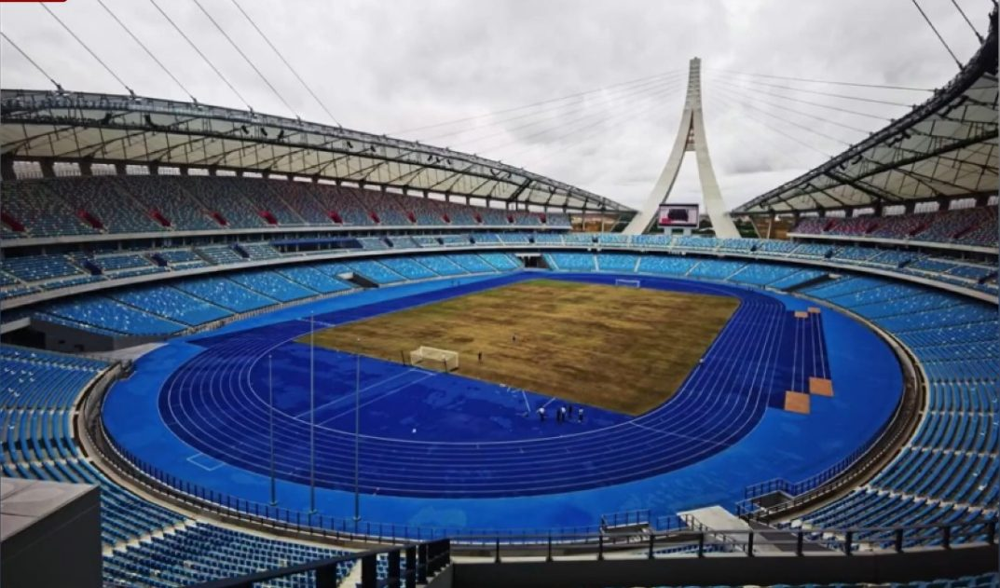

Svay Rieng Sweep Past Port FC 4-1 to Revive ASEAN Club Championship Hopes
Goals from Min Ratanak, Martins Júnior, Tiago Alves and Kwame Peprah seal a commanding Group B win in Phnom Penh

PHNOM PENH — Cambodia’s PKR Svay Rieng FC reignited their ASEAN Club Championship campaign on Thursday, sweeping past Thailand’s Port FC 4-1 at Morodok Techo National Stadium.
Following an opening 6-0 defeat against Malaysia's Johor Darul Ta’zim on 8 October, the Cambodian Premier League champions produced an incisive display to register their first three points in Group B of the 2026–27 Shopee Cup.

Fujii orchestrates first-half control
Midfielder Ryo Fujii set the tempo inside two minutes, testing Port goalkeeper Michael Falkesgaard with a long-range drive. Port forward Jude Soonsup-Bell responded with an 11th-minute shot that was smothered by goalkeeper Sang Hankhun, but the home side made their breakthrough three minutes later.
In the 14th minute, Fujii delivered a lofted pass over the Thai defense, allowing Min Ratanak to beat the offside trap and lift the ball over the onrushing Falkesgaard. Kwame Peprah missed an opportunity to extend the advantage in the 17th minute when he held off Erik Sviatchenko inside the box but sent his strike over the crossbar. Svay Rieng doubled the lead in the 43rd minute when Fujii released Martins Júnior down the left flank; the attacker cut inside Nitipong Selanon and drove a low finish inside the near post.
Alves and Peprah punish Port

Svay Rieng maintained their tempo after the break. In the 69th minute, Tiago Alves converted from close range following sustained pressure to put the home side three goals clear. Peprah then won a penalty eight minutes later, stepping up in the 77th minute to slot the spot kick past Falkesgaard for 4-0.
Port finished the match with 10 men after Chaiyaphon Otton received a straight red card in the 89th minute for a reckless tackle. Omani forward Issam Al Sabhi managed a 91st-minute consolation goal for the visitors, converting in stoppage time before the final whistle.
"It was a big game facing a team from Thailand," Martins Júnior told tournament media after the match. "My teammates, congratulations everyone played very good."
Group B picture shifts
The result lifts head coach Matt McConkey’s Svay Rieng to three points from two matches. In Thursday's other Group B games, Johor Darul Ta’zim defeated Công An Hà Nội 3-1 and Persib Bandung routed Shan United 6-0, leaving JDT and Persib atop the standings with six points apiece.
Port FC remain bottom of the group with two losses from two matches, having previously fallen 3-1 to Persib in Bangkok. Svay Rieng will continue their group stage campaign away to Vietnam's Công An Hà Nội on 10 December.